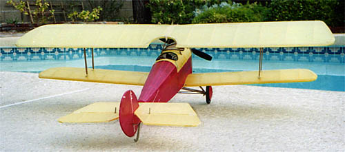

Bruce Shepard of Yuma, AZ built this example and writes... I thought you might be interested in having a photo of your Bellanca I built. I am real pleased with how the model turned out and it is a great looking bipe. All in all it was a great model to build. Weight is 8.5 oz, with 3 Tadiran Lithium Ion cells.
|
Return to
my original version | Other Versions Index
Copyright 2003, Thayer Syme. All rights reserved